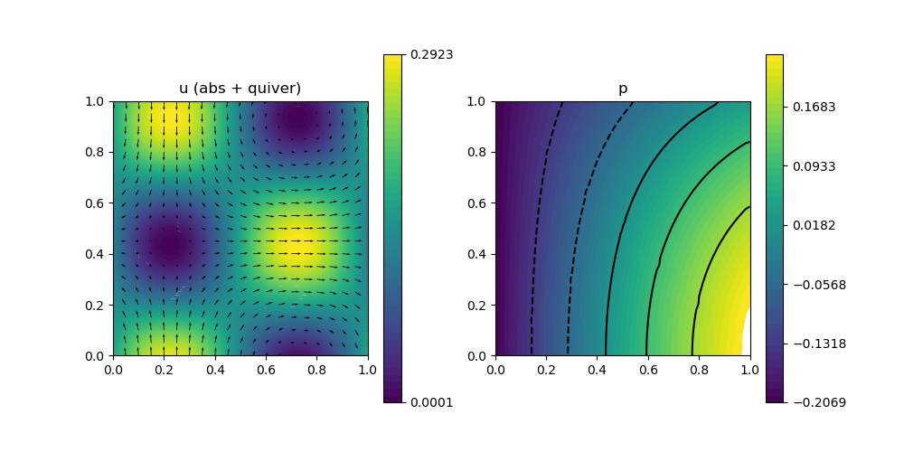
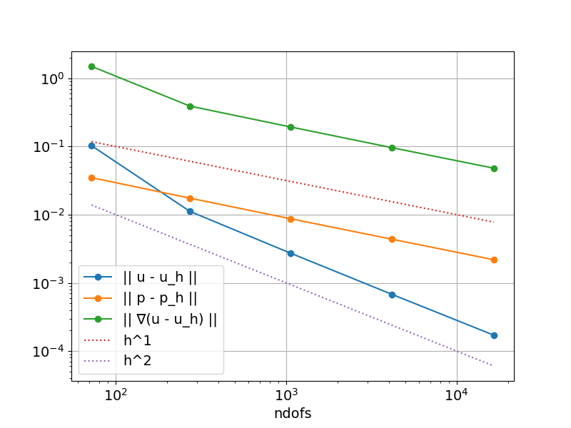

230 : Stokes Hdiv-DG 2D
This example computes a velocity $\mathbf{u}$ and pressure $\mathbf{p}$ of the incompressible Navier–Stokes problem
\[\begin{aligned} - \mu \Delta \mathbf{u} + \nabla p & = \mathbf{f}\\ \mathrm{div}(u) & = 0 \end{aligned}\]
with exterior force $\mathbf{f}$ and some μ parameter $\mu$ and inhomogeneous Dirichlet boundary data.
The problem will be solved by a dicontinuous Galerkin method with Hdiv-conforming ansatz space (e.g. BDM1). The normal components of the velocity are fixed by the boundary data, while the tangential boundary fluxes are handled by the DG discretisation of the Laplacian that involves several discontinuous terms on faces $\mathcal{F}$, i.e.
\[\begin{aligned} a_h(u_h,v_h) = \mu \Bigl( \int \nabla_h u_h : \nabla_h v_h dx + \sum_{F \in \mathcal{F}} \frac{\lambda}{h_F} \int_F [[u_h]] \cdot [[v_h]] ds - \int_F {{\nabla_h u_h}} n_F \cdot [[v_h]] ds - \int_F [[u_h]] \cdot {{\nabla_h v_h}} n_F ds \Bigr) \end{aligned}\]
and similar terms on the right-hand side for the inhomogeneous Dirichlet data. The qunatity $\λ$ is the SIP parameter.
module Example230_StokesHdivDG2D
using GradientRobustMultiPhysics
using ExtendableGrids
using GridVisualize
# flow data for boundary condition, right-hand side and error calculation
function get_flowdata(μ)
p! = (result,x,t) -> (result[1] = cos(t)*(sin(x[1])*cos(x[2]) + (cos(1) -1)*sin(1)))
u! = (result,x,t) -> (
result[1] = cos(t)*(sin(π*x[1]-0.7)*sin(π*x[2]+0.2));
result[2] = cos(t)*(cos(π*x[1]-0.7)*cos(π*x[2]+0.2)))
∇u! = (result,x,t) -> (
result[1] = π*cos(t)*(cos(π*x[1]-0.7)*sin(π*x[2]+0.2));
result[2] = π*cos(t)*(sin(π*x[1]-0.7)*cos(π*x[2]+0.2));
result[3] = -result[2];
result[4] = -result[1])
f! = (result,x,t) -> (## f= -μΔu + ∇p
result[1] = 2*π*π*μ*cos(t)*(sin(π*x[1]-0.7)*sin(π*x[2]+0.2)) + cos(t)*cos(x[1])*cos(x[2]);
result[2] = 2*π*π*μ*cos(t)*(cos(π*x[1]-0.7)*cos(π*x[2]+0.2)) - cos(t)*sin(x[1])*sin(x[2]);)
u = DataFunction(u!, [2,2]; dependencies = "XT", name = "u", quadorder = 5)
p = DataFunction(p!, [1,2]; dependencies = "XT", name = "p", quadorder = 4)
∇u = DataFunction(∇u!, [4,2]; dependencies = "XT", name = "∇u", quadorder = 4)
f = DataFunction(f!, [2,2]; dependencies = "XT", name = "f", quadorder = 5)
return u, p, ∇u, f
end
# everything is wrapped in a main function
function main(; μ = 1e-3, nlevels = 5, Plotter = nothing, verbosity = 0, T = 1, λ = 4)
# set log level
set_verbosity(verbosity)
# FEType (Hdiv-conforming)
FETypes = [HDIVBDM1{2}, H1P0{1}]
# initial grid
xgrid = grid_unitsquare(Triangle2D)
xBFaceFaces::Array{Int,1} = xgrid[BFaceFaces]
xFaceVolumes::Array{Float64,1} = xgrid[FaceVolumes]
xFaceNormals::Array{Float64,2} = xgrid[FaceNormals]
# load exact flow data
u,p,∇u,f = get_flowdata(μ)
# prepare error calculation
L2VelocityErrorEvaluator = L2ErrorIntegrator(Float64, u, Identity; time = T)
L2PressureErrorEvaluator = L2ErrorIntegrator(Float64, p, Identity; time = T)
H1VelocityErrorEvaluator = L2ErrorIntegrator(Float64, ∇u, Gradient; time = T)
# load Stokes problem prototype and assign data
Problem = IncompressibleNavierStokesProblem(2; viscosity = μ, nonlinear = false)
add_rhsdata!(Problem, 1, RhsOperator(Identity, [1], f))
# add boundary data (fixes normal components of along boundary)
add_boundarydata!(Problem, 1, [1,2,3,4], BestapproxDirichletBoundary; data = u)
# define additional operators for DG terms for Laplacian and Dirichlet data
# (in order of their appearance in the documentation above)
hdiv_laplace2_kernel = (result, input, item) -> (result .= input / xFaceVolumes[item])
function hdiv_laplace3_kernel(result, input, item)
for j = 1 : 2, k = 1 : 2
result[(j-1)*2+k] = input[j] * xFaceNormals[k,item]
end
return nothing
end
function hdiv_laplace4_kernel(result, input, item)
result[1] = input[1] * xFaceNormals[1,item] + input[2] * xFaceNormals[2,item]
result[2] = input[3] * xFaceNormals[1,item] + input[4] * xFaceNormals[2,item]
return nothing
end
HdivLaplace2 = AbstractBilinearForm([Jump(Identity), Jump(Identity)], Action{Float64}( hdiv_laplace2_kernel, [2,2]; dependencies = "I", quadorder = 0); name = "μ/h_F [u] [v]", factor = λ*μ, AT = ON_FACES)
HdivLaplace3 = AbstractBilinearForm([Jump(Identity), Average(Gradient)], Action{Float64}( hdiv_laplace3_kernel, [4,2]; dependencies = "I", quadorder = 0); name = "-μ [u] {grad(v)*n}", factor = -μ, AT = ON_FACES)
HdivLaplace4 = AbstractBilinearForm([Average(Gradient), Jump(Identity)], Action{Float64}( hdiv_laplace4_kernel, [2,4]; dependencies = "I", quadorder = 0); name = "-μ {grad(u)*n} [v] ", factor = -μ, AT = ON_FACES)
# additional terms for tangential part at boundary
# note: we use average operators here to force evaluation of all basis functions and not only of the face basis functions
# (which in case of Hdiv would be only the ones with nonzero normal fluxes)
veloeval = zeros(Float64,2)
function hdiv_boundary_kernel(result, input, x, t, item)
eval_data!(veloeval, u, x, t)
result[1] = (input[1] * veloeval[1] + input[2] * veloeval[2]) / xFaceVolumes[xBFaceFaces[item]]
return nothing
end
function hdiv_boundary_kernel2(result, input, x, t, item)
eval_data!(veloeval, u, x, t)
result[1] = (input[1] * xFaceNormals[1,xBFaceFaces[item]] + input[2] * xFaceNormals[2,xBFaceFaces[item]]) * veloeval[1]
result[1] += (input[3] * xFaceNormals[1,xBFaceFaces[item]] + input[4] * xFaceNormals[2,xBFaceFaces[item]]) * veloeval[2]
return nothing
end
HdivBoundary1 = RhsOperator(Average(Identity), Action{Float64}( hdiv_boundary_kernel, [1,2]; dependencies = "XTI", quadorder = u.quadorder); name = "- μ λ/h_F u_D v", factor = λ*μ, AT = ON_BFACES)
HdivBoundary2 = RhsOperator(Average(Gradient), Action{Float64}( hdiv_boundary_kernel2, [1,4]; dependencies = "XTI", quadorder = u.quadorder); name = "- μ u_D grad(v)*n", factor = -μ, AT = ON_BFACES)
# assign DG operators to problem descriptions
add_operator!(Problem, [1,1], HdivLaplace2)
add_operator!(Problem, [1,1], HdivLaplace3)
add_operator!(Problem, [1,1], HdivLaplace4)
add_rhsdata!(Problem, 1, HdivBoundary1)
add_rhsdata!(Problem, 1, HdivBoundary2)
# show final problem description
@show Problem
# loop over levels
Results = zeros(Float64,nlevels,3); NDofs = zeros(Int,nlevels)
Solution = nothing
for level = 1 : nlevels
# refine grid and update grid component references
xgrid = uniform_refine(xgrid)
xBFaceFaces = xgrid[BFaceFaces]
xFaceVolumes = xgrid[FaceVolumes]
xFaceNormals = xgrid[FaceNormals]
# generate FES spaces and solution vector
FES = [FESpace{FETypes[1]}(xgrid), FESpace{FETypes[2]}(xgrid)]
Solution = FEVector{Float64}(["u_h", "p_h"],FES)
# solve
solve!(Solution, Problem; time = T)
# compute L2 and H1 errors and save data
NDofs[level] = length(Solution.entries)
Results[level,1] = sqrt(evaluate(L2VelocityErrorEvaluator,Solution[1]))
Results[level,2] = sqrt(evaluate(L2PressureErrorEvaluator,Solution[2]))
Results[level,3] = sqrt(evaluate(H1VelocityErrorEvaluator,Solution[1]))
end
# plot
nodevals = zeros(Float64,2,num_nodes(xgrid))
nodevalues!(nodevals, Solution[1], Identity)
p=GridVisualizer(;Plotter=Plotter,layout=(1,2),clear=true,resolution=(1000,500))
scalarplot!(p[1,1],xgrid,view(sum(nodevals.^2, dims = 1),1,:),levels=0)
PE = PointEvaluator(Solution[1], Identity)
vectorplot!(p[1,1],xgrid,evaluate(PE);Plotter=Plotter, spacing = 0.05, clear = false, title = "u (abs + quiver)")
nodevalues!(nodevals, Solution[2], Identity)
scalarplot!(p[1,2],xgrid,view(nodevals,1,:); Plotter=Plotter, title = "p")
# print/show convergence history
print_convergencehistory(NDofs, Results; X_to_h = X -> X.^(-1/2), ylabels = ["|| u - u_h ||", "|| p - p_h ||", "|| ∇(u - u_h) ||"])
plot_convergencehistory(NDofs, Results; add_h_powers = [1,2], X_to_h = X -> X.^(-1/2), Plotter = Plotter, ylabels = ["|| u - u_h ||", "|| p - p_h ||", "|| ∇(u - u_h) ||"])
end
endThis page was generated using Literate.jl.
Default output:
julia> Example230_StokesHdivDG2D.main()
PDE-DESCRIPTION
===============
system name = incompressible Stokes-Problem
id | unknown name / equation name
[1] | velocity / momentum equation
[2] | pressure / incompressibility constraint
LHS block | PDEOperator(s)
[1,1] | 0.001 (∇u,∇v) (APT = SymmetricBilinearForm, AT = ON_CELLS, regions = [0])
| μ/h_F [u] [v] (APT = BilinearForm, AT = ON_FACES, regions = [0])
| -μ [u] {grad(v)*n} (APT = BilinearForm, AT = ON_FACES, regions = [0])
| -μ {grad(u)*n} [v] (APT = BilinearForm, AT = ON_FACES, regions = [0])
[1,2] | (div(v),q) (APT = BilinearForm, AT = ON_CELLS, regions = [0])
[2,1] | none
[2,2] | none
RHS block | PDEOperator(s)
[1] | (f, id(v)) (APT = LinearForm, AT = ON_CELLS, regions = [1])
| - μ λ/h_F u_D v (APT = LinearForm, AT = ON_BFACES, regions = [0])
| - μ u_D grad(v)*n (APT = LinearForm, AT = ON_BFACES, regions = [0])
[2] | none
BoundaryOperator[1] : BestapproxDirichletBoundary -> [1, 2, 3, 4]
BoundaryOperator[2] :
GlobalConstraints[1] : Mean[2] != 0
Problem =
ndofs | || u - u_h || order | || p - p_h || order | || ∇(u - u_h) || order |
============|=============================|=============================|=============================|
72 | 1.02863e-01 0.000 | 3.49020e-02 0.000 | 1.49484e+00 0.000 |
272 | 1.11840e-02 3.339 | 1.74718e-02 1.041 | 3.90996e-01 2.018 |
1056 | 2.73673e-03 2.076 | 8.74172e-03 1.021 | 1.93586e-01 1.036 |
4160 | 6.80881e-04 2.029 | 4.37158e-03 1.011 | 9.61205e-02 1.021 |
16512 | 1.71156e-04 2.003 | 2.18588e-03 1.006 | 4.80277e-02 1.007 | 